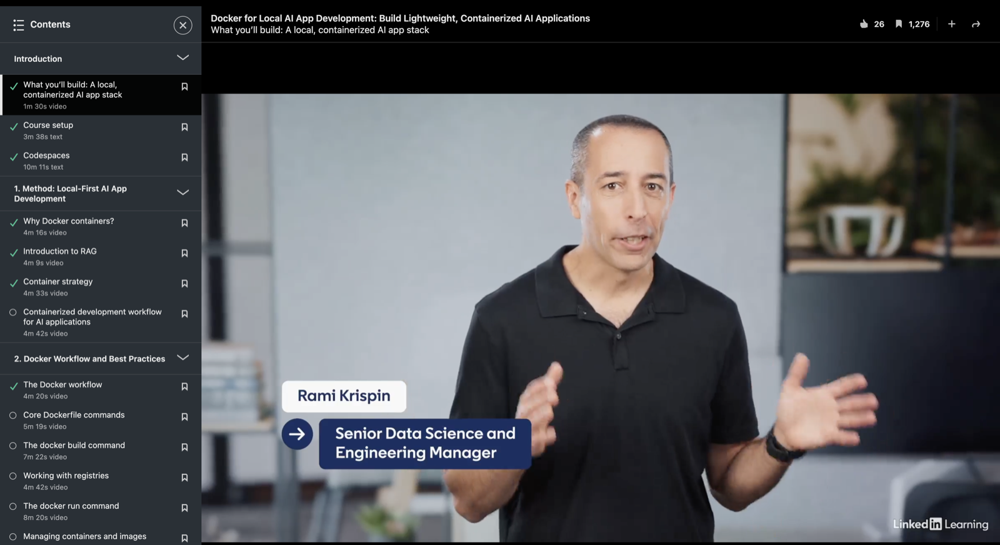
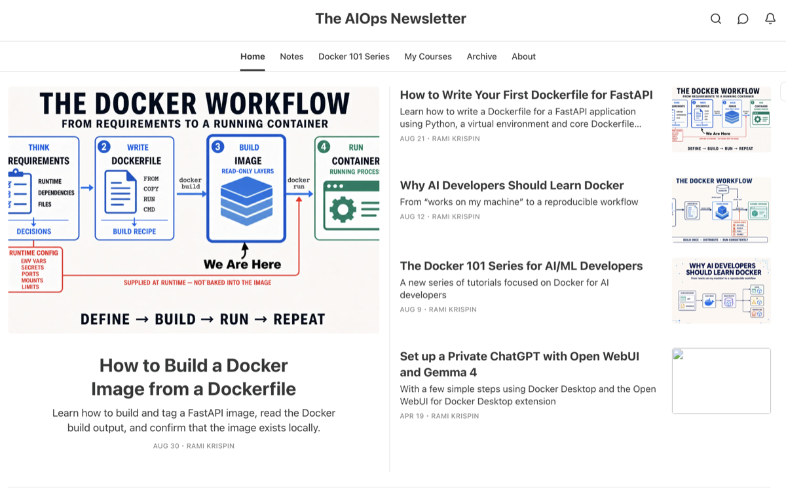
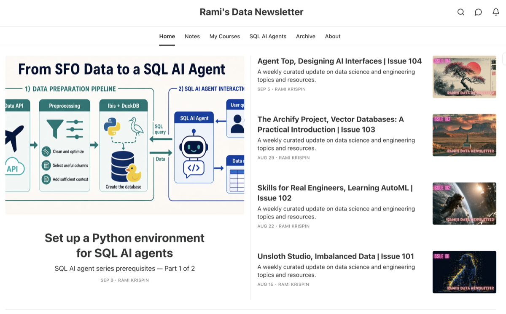
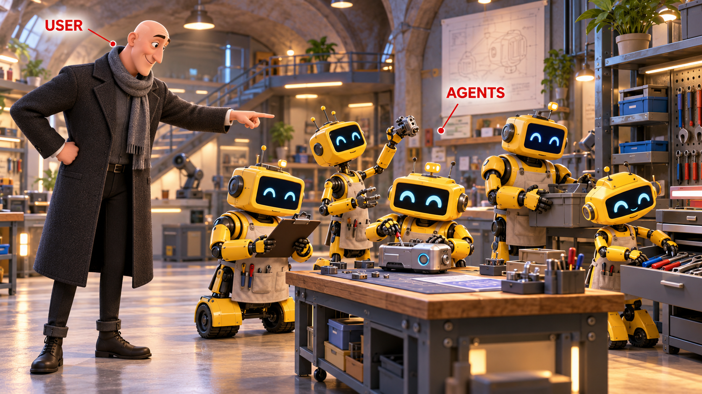

ODSC AI West 2026 · WorkshopDocker Sandboxes
Running AI
Agents Safely
with Docker
Sandboxes
Secure Autonomy with Micro VMs
Rami Krispin, October 28, 2026
Secure Autonomy
Running AI Agents Safely with Docker SandboxesODSC AI West 2026
Introduction
About Me
- Senior Manager, AI, Data Science & Engineering
- Author
- Docker Captain
- LinkedIn Learning Instructor



About Me
Running AI Agents Safely with Docker SandboxesODSC AI West 2026
Workshop route
Agenda
Seven sections—from the case for isolation to two practical Docker Sandboxes demos.
Levels of Isolation
Docker as a Sandbox
Docker Sandboxes Architecture & Setup
Docker Sandboxes: Hello World!
From Prompt to Running App
Summary & Key Takeaways
Agenda
Running AI Agents Safely with Docker SandboxesAudience Check-in
Quick show of hands
Poll
How familiar are you with each topic?
AI Agents
NewLearning the conceptFamiliarUsed an agentHands-onBuilt agent workflows
Docker
NewLearning containersFamiliarRun containersHands-onBuild and use Compose
Sandboxes
NewNew ideaFamiliarUnderstand isolationHands-onUsed agent sandboxes
Choose one level for each card.New · Familiar · Hands-on
Audience Poll
Running AI Agents Safely with Docker SandboxesODSC AI West 2026
01
Why AI Agents Need Sandboxes
Agents can act for us. Sandboxes replace endless click-by-click approvals with a deliberate boundary for mistakes and untrusted instructions.
10 MinutesFive ScenesStarts the Story
Section 01
01 — Why AI Agents Need SandboxesUseful Autonomy
Delegation
Agents extend our intent.
User → agents → useful work

Useful Agents
01 — Why AI Agents Need SandboxesApproval Fatigue
Human review
Approval fatigue defeats the guardrail.
Sandboxed autonomy replaces click-by-click review
Approval Fatigue
01 — Why AI Agents Need SandboxesUnintended Actions
Mistakes
Useful agents can still make a mess.
The goal was right · the action was wrong
Agent Mistakes
01 — Why AI Agents Need SandboxesPrompt Injection
Untrusted input
When an agent goes rogue.
Prompt injection redirects the work
Agent Goes Rogue
01 — Why AI Agents Need SandboxesSandboxed Autonomy
The sandbox
Freedom inside a boundary.
Agents move fast · policy defines the perimeter
Sandboxed Autonomy
Running AI Agents Safely with Docker SandboxesODSC AI West 2026
02
Levels of Isolation
There is no universal sandbox. The right boundary depends on how much you trust the agent, how much autonomy it needs, and what a mistake could affect.
Three OptionsOne Trade-offMatch Risk to Boundary
Section 02
02 — Levels of IsolationChoose the Boundary
A trade-off, not a ranking
There is no universal sandbox.
Simpler · faster · lower overhead
Stronger boundary · greater autonomy
01Guardrails
Host controls
Permissions, path allowlists, and command approvals constrain an agent running on your machine.
- Best fit
- Trusted agent · low-risk work
- Boundary
- Policy, not isolation
02Containment
Container
Namespaces and a scoped filesystem separate the workload while sharing the host kernel.
- Best fit
- Reproducible tools · moderate trust
- Boundary
- Shared kernel
03Isolation
MicroVM
A hypervisor boundary and separate kernel isolate the agent from host processes and resources.
- Best fit
- Autonomous or untrusted work
- Boundary
- Separate kernel
Choose the simplest boundary that contains the realistic blast radius.
Isolation Continuum
02 — Levels of IsolationControl Surfaces
The boundary is only the beginning
You control what crosses it.
Each runtime provides a different boundary. Its configuration decides which host resources the agent can actually reach.
01Host controls
Policy
- Workspace paths
- Allowed commands
- Approval behavior
02Container
Container configuration
- Bind mounts
- Linux capabilities
- Network access
- Docker socket access
03MicroVM
Shared resources
- Workspace mode
- Network policy
- Credential exposure
- Private Docker daemon
The runtime sets the boundary. Configuration decides what crosses it.
Control Surfaces
Running AI Agents Safely with Docker SandboxesODSC AI West 2026
03
Docker as a Sandbox
A container gives an agent a useful runtime boundary. The trust model changes when that agent also needs to create and control other containers.
Container BoundarySocket Trade-offLive Demo
Section 03
03 — Docker as a SandboxContainer Boundary
Start with the runtime
A container creates a useful first boundary.
Package the agent, Python environment, dependencies, and code into one controlled runtime.
Host
Docker container
Task
Agent runtimeisolated process + filesystem
ProcessAI agent
LanguagePython 3.12
PackagesDependencies
WorkspaceCode + tests
Namespaced processes · scoped filesystem · reproducible environment
Result
Shared host kernelLower overhead
Containerized Runtime
03 — Docker as a SandboxDocker Socket
The boundary changes
What if the agent needs to start containers?
A common shortcut mounts the host Docker socket into the agent container.
Host
Agent container
Host serviceDocker daemonCreates · mounts · runs
Daemon createsNew container
Daemon can mountHost filesystem
ProcessAI agentdocker run …
Mounted socket
/var/run/docker.sockSocket access crosses the container boundary.The agent can now control the host Docker daemon.
Next Mount the socket and inspect the authority it grants.
Socket Trade-off
03 — Docker as a SandboxLive Demo
Step 1 · baseline
No socket. No host file.
Start Container A without a bind mount and without the Docker socket. The dummy secrets file remains on the host.
×No mount · no socket
docker run --rm docker:cli \
cat /host-data/my-secrets.txtResult · exit 1
No such file or directoryDemo Prediction
03 — Docker as a SandboxDemo Command
Step 2 · expand authority
The socket changes the result.
Prepare the safe fixture
export DEMO_DIR="$PWD/demo/01-docker-socket/fixture"
cat "$DEMO_DIR/my-secrets.txt"Start A, then ask the daemon to start B
docker run --rm \
-v /var/run/docker.sock:/var/run/docker.sock \
docker:cli \
docker run --rm \
-v "$DEMO_DIR:/host-data:ro" \
alpine cat /host-data/my-secrets.txtSocket Demo
Running AI Agents Safely with Docker SandboxesODSC AI West 2026
04
Docker Sandboxes Architecture & Setup
Each coding agent runs in its own microVM, with explicit paths for workspace access, network traffic, credentials, and a private Docker Engine.
MicroVM BoundaryPolicy-Controlled AccessAgent Ready
Section 04
04 — Docker Sandboxes Architecture & SetupArchitecture
One boundary · explicit connections
One agent. One microVM. Explicit access.
Host
Sandbox microVM · separate Linux kernel
Host gateway
Policy + credentials
Network proxy
allow destinations
inject provider auth
Allowed servicesModels · registries · APIs
Host controls
Lifecycle
sbx CLIcreate · run · stop · policyWorkspaceProject accessmountless · direct · clone
CredentialsHost secret storeraw values stay outside
Agent templateCoding agentCodex · Claude Code · Gemini · Copilot · …
ExecutionShell + toolsinstall · build · test
StoragePrivate filesystempersistent sandbox state
Inside the microVMPrivate Docker EngineNo path to the host daemon
App containerDatabase
inject provider auth
IsolationSeparate kernel
AccessExplicit shares
NetworkingPolicy proxy
ContainersPrivate engine
AgentsReady-made templates
Sandbox Architecture
04 — Docker Sandboxes Architecture & SetupWorkflow
Runtime lifecycle
From prompt to isolated execution.
Sandbox microVM · isolated runtime
Launch
sbx run claude .
Select the agent and project workspace.
Create or resume
Start the persistent microVM, agent template, and private Docker Engine.
Connect
Apply the workspace mode, tools, resources, and network policy.
Execute
Edit code, install packages, run tests, and launch containers.
Private Docker EngineBroker access
Check destinations and inject credentials after traffic leaves the VM.
Models · registries · APIsReview & retain
Receive code changes and keep or remove the sandbox state.
sbx stopState persists
sbx run --nameResume later
sbx rmDelete the VM
Broad autonomy inside the sandbox. Explicit control at every boundary.
Sandbox Workflow
Running AI Agents Safely with Docker SandboxesODSC AI West 2026
05
Docker Sandboxes: Hello World!
Launch a named Codex sandbox, assign resources, share workspaces deliberately, control network access, and prove that state survives a restart.
Live DemoCore CommandsExplicit Access
Section 05
05 — Docker Sandboxes: Hello World!Requirements
Before we open the terminal
Ready to run a local sandbox?
01
System requirements
Supported host
Sonoma 14 or later
Apple silicon
Windows 11 · x64
Windows Hypervisor Platform
24.04 or later · x64/Arm64
KVM enabled + kvm group
Workshop allocation2 virtual CPUs and 4 GiB RAM available for the sandbox VM
02
Software & accounts
Prepared access
sbxCLIInstalled and available onPATH- Docker accountDocker Hub sign-in for sandbox identity and downloads
- OpenAI accessChatGPT OAuth or an OpenAI API key for Codex
- Terminal + networkBash/Zsh-compatible shell and outbound internet access
Docker Desktop / Docker EngineNot requiredThe sandbox includes its own private Docker Engine.
Preflight
sbx versionsbx loginsbx daemon start --detachsbx diagnosesbx secret set openai --oauth
Live Demo Requirements
05 — Docker Sandboxes: Hello World!Core Commands
The command loop
Six commands drive the demo.
Prepare once
sbx login→sbx daemon start --detach→sbx secret set openai --oauth
sbx runLaunch or attachCreate a sandbox or reconnect to its saved agent.
sbx lsInspectSee names, state, agent, resources, and uptime.
sbx execExecuteRun one command or open an interactive shell.
sbx policyGovernInspect, allow, deny, check, and log network access.
sbx stopPauseStop compute while preserving private state.
sbx rmRemoveDelete the VM, private files, images, and containers.
Our demo launch
sbx run --detach \
--name odsc-basics --cpus 2 --memory 4g \
codex \
./demo-workspace \
./reference:roBackgroundNamed2 CPU · 4 GiBRead-write + read-only
Getting Started Demo
Running AI Agents Safely with Docker SandboxesODSC AI West 2026
06
From Prompt to Running App
Codex builds a Streamlit dashboard inside an isolated sandbox, using explicit workspace permissions, a private Docker Engine, and a deliberately published port.
CodexStreamlitPrivate Docker Engine
Section 06
06 — From Prompt to Running AppLive Demo
The final build
One prompt. One sandbox. One running app.
Scope the task
Give Codex synthetic sales data in a writable workspace.
RW
demo-workspaceROexpected-outputGenerate
Codex reads the task and creates the complete application project.
app.pyrequirements.txtDockerfileBuild & run
Build the image and start the container with the sandbox’s private Docker Engine.
odsc-sales:workshopodsc-salesPublish
Expose sandbox port 8501 only when the application is ready.
Host→Sandbox :8501→Container :8501
Prove it works
Open the dashboard, exercise its filters, and confirm graceful empty results.
$19,000Total$10,500West$4,200Notebook
The host receives the code and browser connection.Agent commands, packages, images, and containers stay inside the sandbox boundary.
Codex + Streamlit Demo
Running AI Agents Safely with Docker SandboxesODSC AI West 2026
07
Summary & Key Takeaways
Bring autonomy, isolation, and explicit access together into one practical decision: choose a boundary that matches the agent’s freedom and the consequences of its work.
AutonomyBoundariesPractical Fit
Section 07
Running AI Agents Safely with Docker SandboxesSummary
Closing perspective
A safe place for agents to do real work.
One agent.
One persistent microVM.
A separate Linux kernel and private Docker Engine contain the agent’s commands, packages, images, services, and containers.
Workspace sharesNetwork policyCredential proxy
Install, build, test, and run complete containerized systems.
Choose what code, services, credentials, and ports cross the boundary.
Host processes and the host Docker daemon remain beyond the agent’s reach.
Autonomy meets consequence.
The agent executes generated code, installs dependencies, runs Docker or Compose, or works long enough that repeated approvals stop being a useful control.
The work is trusted and narrow.
Host permissions or a container may be simpler when execution is manual, impact is low, and the task does not need its own Docker environment.
More autonomy deserves a stronger boundary.Docker Sandboxes make that boundary usable.
Workshop Summary
Running AI Agents Safely with Docker SandboxesODSC AI West 2026
Rami Krispin · October 28, 2026
Thank You!
Docker Sandboxes Workshop